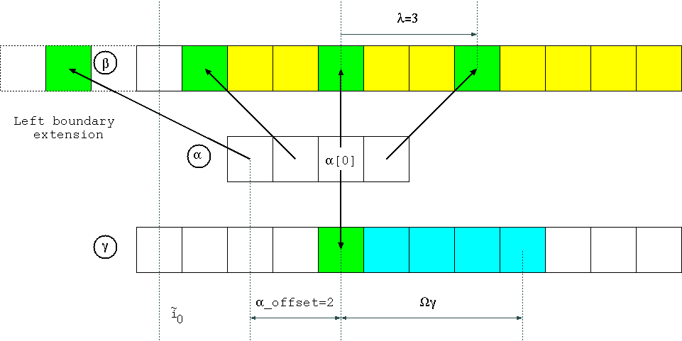

Direct Convolution
For small kernels this approach is more efficient than FFT
This can be visualized as follow

Package aimes:
versatility: supports "à trous" algorithm, cross-correlation, different boundary extensions
performance: beats FFT approach for small kernels
implements: basic filtering operations like Savitzky-Golay filters or the decimated/undecimated wavelet transform.
This package basically exports two main functions
direcConvcomputes the convolution and returns a newly allocated vectordirecConv!computes the convolution in-place
The introduced parameters and their roles is quickly describe below
Basic usage examples
Performance
Typically wavelet transform involve small filters, of size 5 for instance. We want to compare directConv to native Julia conv function.
First one must check that the two methods return the same result. Note that conv function return a vector γ of length |α|+|β|-1 whereas our function respect initial β bounds, hence the returned γ vector has same size as input β.
using DirectConvolution, BenchmarkTools
α=rand(5);
β=rand(1000);
r1=conv(α,β);
r2=directConv(α,0,-1,β,:ZeroPadding,:ZeroPadding);
println("Result comparison $(r1[1:1000] ≈ r2)")
println("Julia conv()")
@benchmark conv(α,β);
println("This directConv()")
@benchmark directConv(α,0,-1,β,:ZeroPadding,:ZeroPadding);α_offset parameter
Let's start with a basic example, with zero padding boundary extensions. This example shows the role of the α_offset parameter.
using DirectConvolution
α=Float64[0,1,0];
β=collect(Float64,1:6);
γ1=directConv(α,0,-1,β,:ZeroPadding,:ZeroPadding); # α_offset = 0
γ2=directConv(α,1,-1,β,:ZeroPadding,:ZeroPadding); # α_offset = 1Filter coefficients
α = [0.0, 1.0, 0.0]
Computation with α_offset=0 (observe the signal shift)
β = [1.0, 2.0, 3.0, 4.0, 5.0, 6.0]
γ1 = [0.0, 1.0, 2.0, 3.0, 4.0, 5.0]
Computation with α_offset=1 (observe the phase is corrected)
β = [1.0, 2.0, 3.0, 4.0, 5.0, 6.0]
γ2 = [1.0, 2.0, 3.0, 4.0, 5.0, 6.0]CAVEAT: under construction
Demos
Autodoc...
DirectConvolution.directConv — Method.directConv(tilde_α::AbstractArray{T,1},
α_offset::Int64,
λ::Int64,
β::AbstractArray{T,1},
LeftBoundary::Symbol,
RightBoundary::Symbol)Compute convolution.
Return γ, a created vector of length identical to β one.